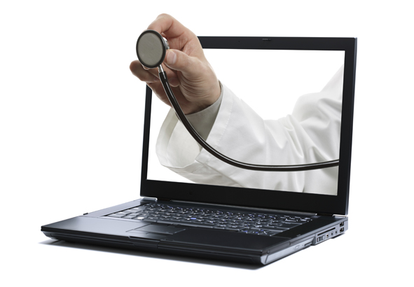
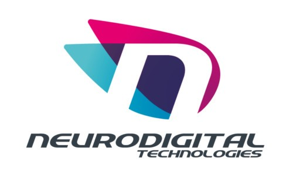

La telemedicina és la prestació de serveis de medicina a distància. Per a la seva utilització normalment es fan servir les tecnologies de la informació i les comunicacions. La telemedicina pot anar d'una cosa tan simple com dos professionals de salut discutint un cas per mòbil fins a la utilització d'avançada tencologia en inforàtica per realitzar cirurgia a distància i en temps real.
Funcionament

GloveOne de Neurodigital Technologies, una empresa fundada per investigadors de l'Universitat d'Almería, ha creat un guant que recrea el tacte dels objectes virtuals. Pretenen portar el seu invent a tots els camps d'entreteniment o, a les infinites possibilitats que té en medicina, per exemple, per a simulacions mèdiques, on ara només hi ha un "feedback" visual, per a simular operacions quirúrgiques.
Però també en el camp de la rehabilitació, imaginem un malalt d'alzhéimer que només recorda al seu gos Pipo i el que era estar amb ell i acariciar-lo, podríem recrear la escena en la realitat virtual i permetre-li sentir el tacte de tocar el seu gos.
El tacte visual és possible després de 7 anys d'investigació per aconseguir convertir les sensacions de tacte en moviments transmisibles a sensors gràcies a un algoritme de replicació de cada sensació.
Funcions i Prestacions
El que ens aporta el GloveOne o la telemedicina en general, per exemple, és que un metge molt bo que necessitis en una operació i no pugui venir, pot utilitzar la telemedicina per fer la operació a temps real desde un altre lloc del món. O per a la rehabilitació de la gent que li costa moure les cames, per exemple, és amb un Microsoft Kinect és captar els seus moviments i així fer-li fer uns exercicies que estàn a una pantalla.